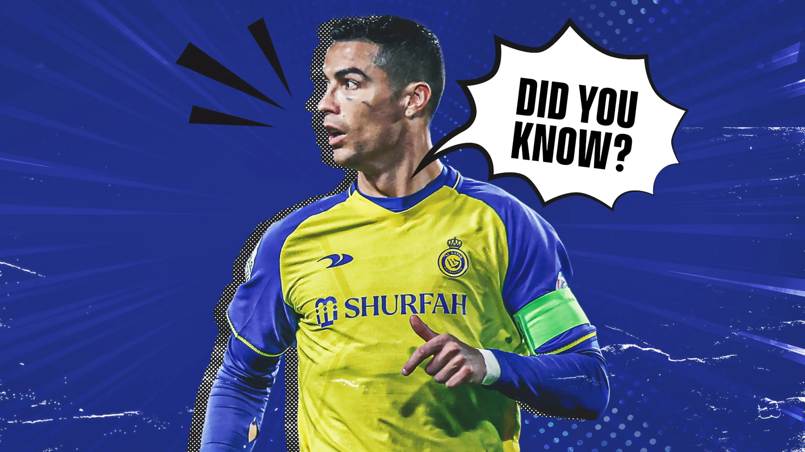

Siapakah Cristiano Ronaldo?
Cristiano Ronaldo dos Santos Aveiro adalah seorang pemain sepak bola profesional asal Portugal yang bermain di klub Arab Saudi Al-Nassr FC sebagai penyerang dan juga kapten tim nasional Portugal.
Sering dianggap sebagai pemain terbaik di dunia dan secara luas dianggap sebagai salah satu pemain terhebat sepanjang masa, Ronaldo memenangkan lima penghargaan Ballon d'Or dan empat Sepatu Emas Eropa.
Tentang
Informasi pribadi
Informasi klub
Karier Club
Sporting CP
Pada usia 16, Ronaldo dipromosikan dari tim junior Sporting ke tim utama oleh manajer László Bölöni yang terkesan dengan caranya menggiring bola
Manchester United
Dari apa yang terjadi sejak pertandingan persahabatan itu, Ronaldo pun didatangkan ke Manchester United. Sebelum ia bermain untuk klub itu, Sir Alex Ferguson bertanya pada Ronaldo angka berapa nomor punggung yang diharapkannya. Cristiano Ronaldo menjawab 28, karena itu adalah nomor favoritnya. Namun Sir Alex Ferguson malah berkata tidak, mulai sekarang nomor punggungnya adalah 7. Di Manchester United, penyandang nomor punggung 7 secara turun temurun adalah pemain legendaris yang membawa Manchester United ke puncak kejayaannya, dan Sir Alex Ferguson memberikan nomor punggung keramat itu sebagai wujud penghargaannya kepada talenta brilian yang dimilikinya. Ia bermain 196 kali dan mencetak 84 gol.
Real Madrid
Dari apa yang terjadi sejak pertandingan persahabatan itu, Ronaldo pun didatangkan ke Manchester United. Sebelum ia bermain untuk klub itu, Sir Alex Ferguson bertanya pada Ronaldo angka berapa nomor punggung yang diharapkannya. Cristiano Ronaldo menjawab 28, karena itu adalah nomor favoritnya. Namun Sir Alex Ferguson malah berkata tidak, mulai sekarang nomor punggungnya adalah 7. Di Manchester United, penyandang nomor punggung 7 secara turun temurun adalah pemain legendaris yang membawa Manchester United ke puncak kejayaannya, dan Sir Alex Ferguson memberikan nomor punggung keramat itu sebagai wujud penghargaannya kepada talenta brilian yang dimilikinya. Ia bermain 196 kali dan mencetak 84 gol.
Juventus
Pada 11 Juli 2018, Ronaldo pindah ke klub Italia, Juventus dengan nilai transfer sebesar 112 juta Euro (99,2 Poundsterling), atau setara dengan Rp 1,88 Triliun.
Dan kembali ke Manchester United Lagi.Dia kurang berhasil dengan dia kembali ke Manchester United
al Al-Nassr
Pada 30 Desember 2022, klub Saudi Al Nassr mencapai kesepakatan bagi Ronaldo untuk bergabung dengan klub efektif 1 Januari 2023, menandatangani kontrak hingga 2025.Seperti dilansir Fabrizio Romano dari The Guardian, Ronaldo menerima gaji sepak bola tertinggi dalam sejarah, senilai €200 juta per tahun. ini termasuk gaji sepak bola tahunan yang dijamin sebesar €90 juta, dengan kesepakatan komersial dan sponsor termasuk membawa total gaji tahunannya menjadi €200 juta. Dia juga dilaporkan mendapat bonus penandatanganan di wilayah € 100 juta.[38] Menurut Romano, Ronaldo menolak pindah ke Sporting Kansas City untuk bergabung dengan Al Nassr.